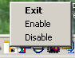
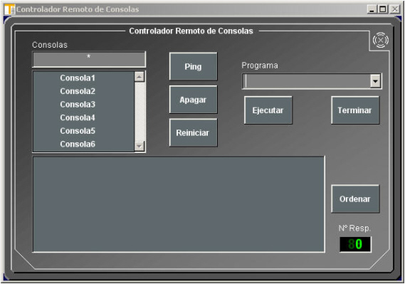

Control Remoto de Consolas
Esta herramienta permite al operador ejecutar comandos o aplicaciones remotamente en las consolas del sistema. La herramienta consta de dos aplicaciones independientes:
Remote Control Receiver
Es la parte de la herramienta encargada de recibir y ejecutar las ordenes remotas. Debe estar permanentemente funcionando por lo que durante la instalación de la herramienta se incluye en la carpeta de inicio de la consola.
En la Barra de Tareas se presenta el icono correspondiente a esta aplicación. Picando sobre él con el botón derecho del ratón se presenta un menú que permite deshabilitar o volver a habilitar el receptor y terminar la aplicación del receptor.

Si se deshabilita o se termina la aplicación del receptor, la consola no aceptará las ordenes emitidas remotamente desde otras consolas.
Un acceso directo a esta aplicación puede encontrarse en la lista de Todos los Programas del menú Inicio de Windows dentro del apartado ADDocean – Remote Control.
Remote Control Unit
Es la parte de la herramienta encargada de emitir las ordenes del operador. Incluye una ventana que permite al operador especificar las ordenes y consolas en las que se ejecutarán.
Un acceso directo a esta aplicación puede encontrarse en la lista de Todos los Programas del menú Inicio de Windows dentro del apartado ADDocean – Remote Control.
Al iniciar la aplicación se presenta la siguiente ventana con la lista de consolas que pueden ser controladas remotamente:

Para actuar remotamente sobre una consola o grupo de consolas, el operador debe seleccionarlas previamente y a continuación pulsar el botón asociado a la acción que quiere realizar.
Las consolas pueden ser seleccionadas en la lista picando sobre su nombre con el botón izquierdo del ratón. Para eliminar la selección de la consola en la lista picar con el botón derecho del ratón.
Otra manera de seleccionar consolas es escribir su nombre en el campo Consolas pudiéndose utilizar expresiones con caracteres comodín para referirse a un grupo de consolas. Se admiten los siguientes caracteres comodín:
Las acciones que se pueden ejecutar remotamente en las consolas son las siguientes:
Las respuestas de las consolas se muestran en el área inferior de la ventana, y pueden ser ordenadas alfabéticamente pulsando el botón Ordenar.
Instalación de la herramienta
La herramienta de Control Remoto de Consolas se distribuye conjuntamente con los ficheros del Simulador. Para su instalación se entrega un único fichero ejecutable: Install Remote Control.exe.
Ejecutar el fichero de instalación y seguir las instrucciones que presenta en la pantalla para seleccionar idioma y el directorio en el que se almacenarán los ficheros.
Durante el proceso de almacenaje de los ficheros que componen la herramienta, se presenta una ventana del bloc de notas con el contenido por defecto del fichero RemoteControl.ini. Este fichero de configuración almacena la dirección de broadcast de la red a la que están conectadas las consolas, la lista de aplicaciones a ejecutar remotamente y la lista de consolas sobre las que se puede actuar.
Actualizar en el fichero RemoteControl.ini los siguientes parámetros:
Tras salvar el fichero RemoteControl.ini continua el proceso de instalación. Seguir las instrucciones presentadas en pantalla hasta su finalización.
Por defecto el fichero RemoteControl.ini se almacena en el directorio “raíz” del Sistema Operativo, es decir, “C:\” para Windows. Si se desea cambiar, el nuevo camino hasta este fichero se puede especificar con la variable de entorno REMOTE_CONTROL_INI_PATH.
El proceso de instalación incluye en la lista de Todos los Programas del menú Inicio de Windows un apartado ADDocean – Remote Control con los accesos directos a las aplicaciones Remote Control Unit, Remote Control Receiver y Uninstall. Copiar el acceso directo de la aplicación Remote Control Unit en el escritorio.
El proceso de instalación también incluye en la Barra de Tareas de Windows el icono correspondiente al Remote Control Receiver. Esta aplicación se incluye en la carpeta Inicio de Windows para que inicie cada vez que se inicia Windows.